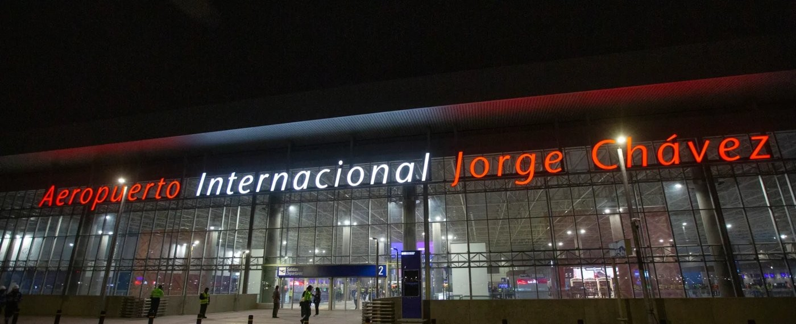
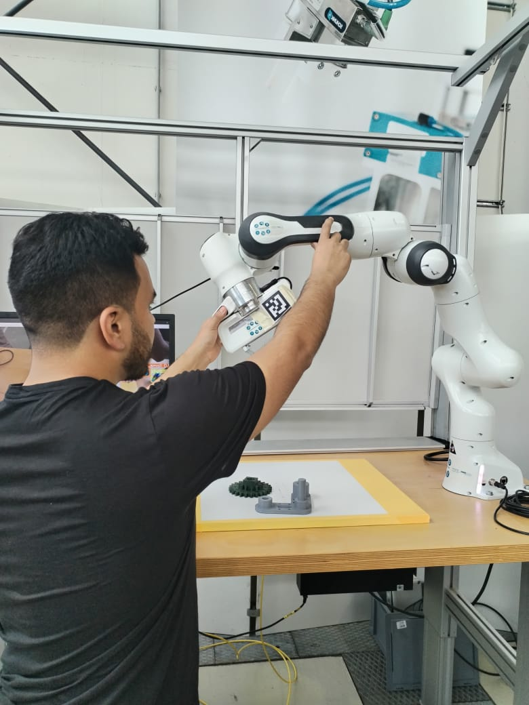
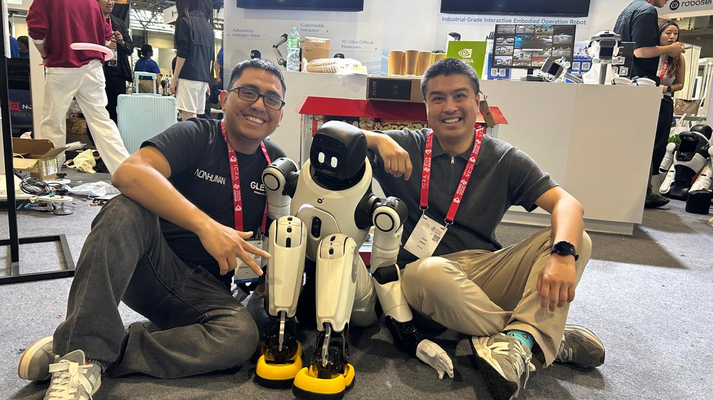
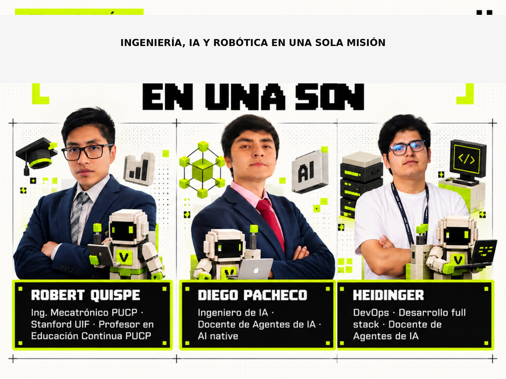

Puente China ↔ LATAM
Investigación, prototipos y deploy
Asesoría y desarrollo de robótica e IA

Conectamos capacidad
con oportunidad.
GOU: puente China–LATAM para universidades y empresas. Trabajamos de la mano con startups.



Diego Pozo
Alianzas universidad–empresa. Del laboratorio en China al despliegue en LATAM.

Raúl Bastidas
Humanoides · teleoperación · robot learning · navegación semántica.

China ↔ LATAM
Laboratorios reales. Socios reales. JAR Partners · Jiangnan University · startups aliadas.
Educación
Cuadrúpedos modulares.
Soporte remoto
Teleoperación y respuesta en tiempo real.
Entretenimiento
Competencia y espectáculo: control dinámico al límite.
Entrenamiento
Operación remota y recolección de data real: cada sesión captura datos para entrenar y desplegar robots.



Veyon
Automatización multi-agente: IA que opera procesos, no solo responde.
veyon.dev ↗
Tres líneas de trabajo

Lab. Importación.
Despliegue.


GOU × DINAUT
Alianza con cobots UR3 / UR10: automatización real en planta.

GOU × PUCP
Desarrollo conjunto: de la universidad a aplicaciones reales.

Pasemos del vínculo
a la ejecución.
GOU: puente China–LATAM para universidades y empresas. Trabajamos de la mano con startups.